Rheinmetall представи мобилната противовъздушна система Skyranger 30 на Eurosatory 2026
Германският отбранителен концерн Rheinmetall представи най-новата конфигурация на своята мобилна система за противовъздушна отбрана Skyranger 30 по време на престижното международно изложение Eurosatory 2026 в Париж [1]. Акцентът на представянето през тази година е интеграцията на купола Skyranger върху тежката верижна бойна машина на пехотата Lynx KF41. Тази демонстрация подчертава гъвкавостта на концепцията за противовъздушна отбрана от близко разстояние (SHORAD – Short Range Air Defence) в условията на съвременната бойна среда, характеризираща се с масирано използване на дронове.
Модулност и съвместимост с различни платформи
Интеграцията на купола върху шасито на Lynx KF41 показва технологичната зрялост и гъвкавост на дизайна на Skyranger 30. Системата не е ограничена до единичен тип шаси; куполът е проектиран така, че да може да се монтира на широк спектър от колесни и верижни бронирани платформи. Освен Lynx KF41, Rheinmetall вече е планирала или реализирала интеграция върху колесната бойна машина Boxer, основния боен танк Leopard 2 и колесната бронирана машина Pandur.
Този подход позволява на армейските подразделения да стандартизират логистиката и поддръжката си, като същевременно разполагат с високомобилно средство за прикритие на механизирани колони. Възможността за бързо преконфигуриране прави системата адаптивна към специфичните логистични вериги на различните оператори. Държавите, които вече използват Boxer или Leopard 2, могат лесно да интегрират системата за ПВО в съществуващата си инфраструктура.
Въоръжение и поразяваща мощ срещу асиметрични заплахи
Основният стълб на отбранителните възможности на Skyranger 30 е 30-милиметровото револверно оръдие KCE [1]. То се характеризира с темп на стрелба от около 1200 изстрела в минута и максимален ефективен обсег до 3000 метра. Голямо предимство на оръдието е използването на програмируеми боеприпаси с въздушно взривяване от типа Ahead, разработени също от Rheinmetall. Всеки снаряд съдържа 162 тежки волфрамови суббоеприпаса, които се изхвърлят в точно изчислен момент непосредствено пред целта, образувайки смъртоносен облак. Това прави системата изключително ефективна за неутрализиране на микро- и мини-дронове, както и на бързо движещи се лоитериращи боеприпаси.
За поразяване на цели на по-големи разстояния и височини, дизайнът на купола поддържа добавянето на модул с леки противовъздушни ракети (SHORAD ракети). Тази хибридна концепция гарантира, че системата може да противодейства эффективно не само на малки безпилотни апарати, но и на традиционни въздушни заплахи като бойни хеликоптери и нисколетящи изтребители.
Сензори и мрежова свързаност
Skyranger 30 разполага с напълно интегриран комплекс от сензори, който включва активен радар за откриване и проследяване с пет антени с фазирана решетка (AESA), осигуряващ 360-градусово покритие. Допълнително системата използва инфрачервена електрооптична система FIRST за пасивно наблюдение без излъчване на радарни сигнали. Тези технологии осигуряват на екипажа пълна ситуационна осведоменост дори в условия на интензивно радиоелектронно заглушаване.
Системата е проектирана да работи в състава на по-голяма цифрова мрежа за противовъздушна отбрана, получавайки данни от външни радари и командни пунктове за тактическо управление. В същото време она притежава пълна тактическа автономност и може да идентифицира, проследява и поразява цели самостоятелно, което е критично важно при нарушени комуникации на бойното поле.
Схематична архитектура на Skyranger 30 върху Lynx KF41
Следната схема илюстрира основните компоненти на интегрираната система за ПВО:

Схематично представяне на компонентите на противовъздушния комплекс Skyranger 30. Източник: Анализ на Svetni.me.
Европейско приемане и мащабиране на производството
Нарастващата заплаха от безпилотни системи доведе до сериозен интерес към Skyranger 30 от страна на европейските партньори в НАТО. Системата вече е поръчана или е в процес на внедряване от редица държави, включително Германия, Австрия, Нидерландия, Румъния и Дания [1]. Германия планира да я внедри върху Boxer, докато Австрия е избрала колесното шаси на Pandur EVO.
Този висок интерес налага Rheinmetall да мащабира значително производствения си капацитет, за да отговори на нуждите на европейските клиенти в кратки срокове. Увеличаването на обемите на производство има за цел да ускори доставките и да осигури необходимата отбранителна готовност на съюзниците по източния фланг на НАТО и в Централна Европа.
Източници:
[1]: Eurosatory 2026: Rheinmetall showcases its Skyranger air defence system - Rheinmetall